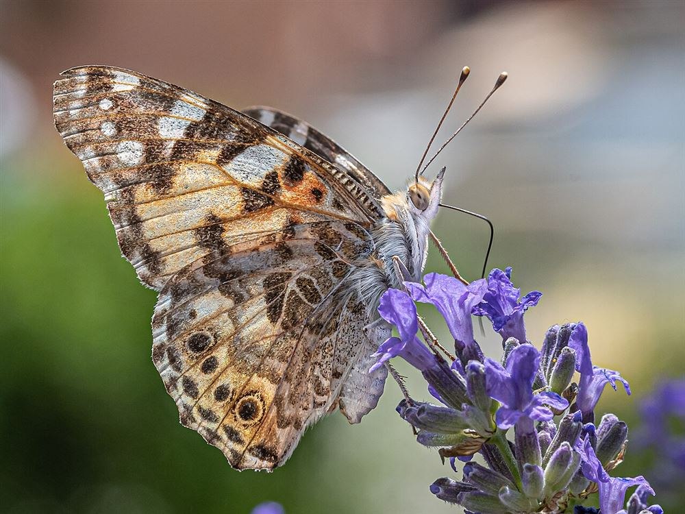

Especies
Fichas para reconocer y comparar distintas mariposas.
A continuación se presentan fichas de identificación de algunas especies frecuentes. Cada ficha incluye una fotografía, datos rápidos, rasgos distintivos y su relación con el hábitat, para facilitar el reconocimiento de mariposas en jardines y espacios verdes.

Mariposa monarca
Danaus plexippus
Alas naranjas con venas negras. Una de las especies migratorias más conocidas.
Ver ficha
Mariposas de jardín
Vanessa cardui y Papilio machaon
Especies frecuentes en jardines, atraídas por lavanda y otras flores con néctar.
Ver ficha
Migratorias
Ver también Hábitat y conservación
La monarca es la especie migratoria más estudiada; su recorrido depende de un hábitat saludable en toda su ruta.
Más info¿Cómo identificar una especie?
🎨 Color y patrón
Observá el color base de las alas y el diseño de sus manchas.
📏 Tamaño
Compará el tamaño aproximado con referencias conocidas.
🌿 Planta asociada
Muchas especies se identifican por la planta donde se las observa.
📍 Distribución
La región y la época del año ayudan a acotar las posibilidades.